基本概念
首先需要明确，iptables 只是用户态下的一款命令行工具，并不是真正意义上的防火墙。实际起到防火墙作用的是内核中的模块 netfilter。iptables 只是用于操作它的工具，后面将 iptables/netfilter 简称为 iptables
表和链
iptables 将流量的检测分为了 5 个区域（链），分别是 PREROUTING、INPUT、FORWARD、OUTPUT、POSTROUTING，每个链所能使用的表的种类是不一样的，而每个表中包含的则是具体的规则。
iptables 为我们提供了如下规则的分类，或者说，iptables 为我们提供了如下『表』
filter表：负责过滤功能，防火墙；内核模块：iptables_filternat表：network address translation，网络地址转换功能；内核模块：iptable_natmangle表：拆解报文，做出修改，并重新封装的功能；内核模块：iptable_mangleraw表：关闭nat表上启用的连接追踪机制；内核模块：iptable_raw
上述 5 个链所能使用的表『规则类别』是不同的：
PREROUTING：raw表，mangle表，nat表。INPUT：mangle表，filter表，（centos7 中还有nat表，centos6 中没有）。FORWARD：mangle表，filter表。OUTPUT：raw表，mangle表，nat表，filter表。POSTROUTING：mangle表，nat表。
下图为『朱双印』整理的对照关系，注意其中不同链所处的位置，在编写规则是需要清楚其作用范围。
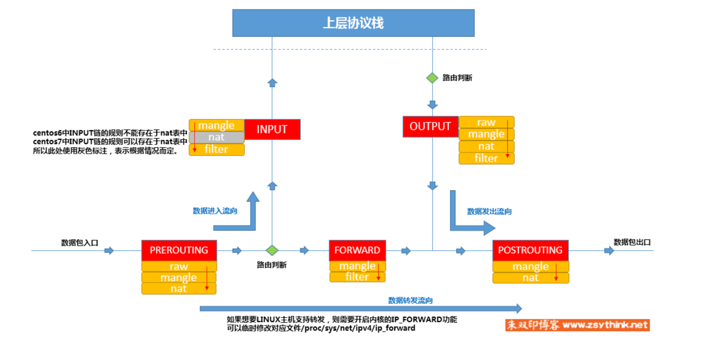
除了系统默认
5条链，用户也可以自定义一条链，但是需要将它作为引用插入到前述 5 条链之中才能使用。
规则
规则的逻辑很简单，如果数据包符合指定的条件，则进行某个动作。最基础的匹配条件有两个，源地址和目的地址，除此之外还包含拓展匹配功能，需要有相应的内核模块才能使用，这些扩展条件其实也是 netfilter 中的一部分。例如 state，匹配 TCP 协议的状态。
常见的规则动作有如下几种：
ACCEPT：允许数据包通过。DROP：直接丢弃数据包，不给任何回应信息，这时候客户端会感觉自己的请求泥牛入海了，过了超时时间才会有反应。REJECT：拒绝数据包通过，必要时会给数据发送端一个响应的信息，客户端刚请求就会收到拒绝的信息。SNAT：源地址转换，解决内网用户用同一个公网地址上网的问题。MASQUERADE：是SNAT的一种特殊形式，适用于动态的、临时会变的ip上。DNAT：目标地址转换。REDIRECT：在本机做端口映射。LOG：在/var/log/messages文件中记录日志信息，然后将数据包传递给下一条规则，也就是说除了记录以外不对数据包做任何其他操作，仍然让下一条规则去匹配。
基本操作
规则都是存在于表中，类比数据库中的表，它的相关操作也是类似的，有增删改查。
规则的查找
查找是最简单的，可通过如下命令查看 filter 表中的规则，参数 -t 表示查看的表类型，-L 表示列出规则
iptables -t filter -L输出结果如下『内容较长，只截取了一部分』，红色方块包含的为规则的内容，蓝色方块包含的为对应的链，图中展示了两个链，INPUT 和 FORWARD。
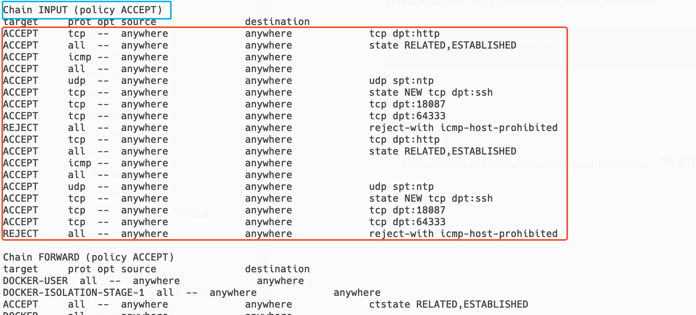
假设希望放通其它机器对本机的特定端口的访问，那么可以在 filter 表中定义规则，并放入 INPUT 链上。
此外，举一反三，若是想查看其它表的规则，可使用如下命令
iptables -t raw -L
iptables -t mangle -L
iptables -t nat -L如果省略 -t 参数，默认操作 filter 表。所以可以也可以直接使用
iptables -L若是想查看特定链上的规则信息，使用如下命令，其中若不指定 -t 参数则默认读取 filter 中的规则
iptables -L INPUT -t filter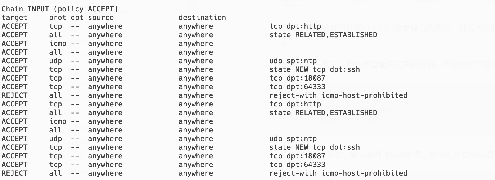
图中自由 5 列，而使用 -v 参数可以看到更详细的信息
iptables -vL INPUT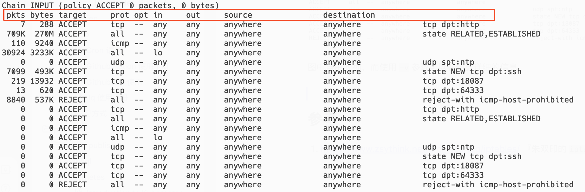
各个字段的含义如下：
pkts: 对应规则匹配到的报文的个数。bytes: 对应匹配到的报文包的大小总和。target: 规则对应的target，往往表示规则对应的『动作』，即规则匹配成功后需要采取的措施。prot: 表示规则对应的协议，是否只针对某些协议应用此规则。opt: 表示规则对应的选项。in: 表示数据包由哪个接口 (网卡) 流入，即从哪个网卡来。out: 表示数据包将由哪个接口 (网卡) 流出，即到哪个网卡去。source: 表示规则对应的源头地址，可以是一个IP，也可以是一个网段。destination: 表示规则对应的目标地址。可以是一个IP，也可以是一个网段。
source 和 destination 在规则中是设置成 ip 形式的，而前面的执行结果中展示的都是 anywhere，它对应 0.0.0.0/0 表示所有地址，这是因为 iptables 对 ip 做了 DNS 反向查询以寻找对应的 hostname 或域名。
可以使用 -n 选项，表示不对 IP 地址进行名称反向查询，直接显示 IP 地址
iptables -nvL INPUT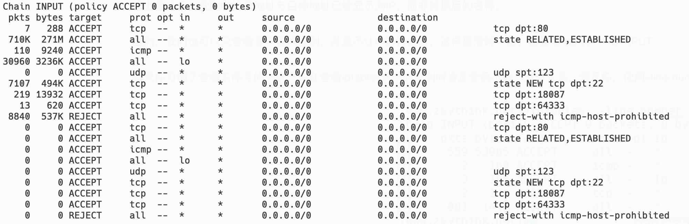
若是想显示每条规则的编号，则可以使用 –line-numbers 选项
iptables --line-numbers -nvL INPUT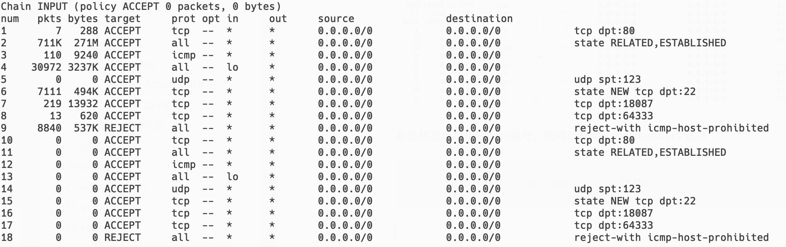
输出的规则信息中除了展示的每一列的字段，在每个链的后面都有一个括号，括号里面有一些信息
Chain INPUT (policy ACCEPT 0 packets, 0 bytes)
policy 表示当前链的默认策略，policy ACCEPT 表示 INPUT 的链中的规则的默认动作为 ACCEPT，即默认放通所有经过 INPUT 的流量，所以我们在配置 INPUT 链的具体规则时，若要拒绝则需要显示指定动作『DROP 或者 REJECT』。
但如果是这样，那么意味着在 INPUT 链配置的每个规则的动作应当是 DROP 或者 REJECT，也就是黑名单的形式。不过实际情况似乎并非如此，上图可以看到很多动作为 ACCEPT 的规则，看着更像是白名单，这一点和 iptables 的机制有关，后续会提到。
packets 表示当前链（上例为 INPUT 链）默认策略匹配到的包的数量，0 packets 表示默认策略匹配到 0 个包。bytes 表示当前链默认策略匹配到的所有包的大小总和。它们被称为计数器，使用 -v 选项时才会显示。
规则的新增
在开始之前，在测试机器上先清空
INPUT上的filter表中规则，使用iptables -F INPUT，-F 表示flush擦除所选范围中的所有规则。
假设要屏蔽 10.128.154.152 对本机的所有请求，那么匹配逻辑里只要匹配源地址即可。动作可以选择 DROP 或 REJECT。
可用如下命令在 INPUT 链的 filter 表中的新增一条规则，-I 表示插入，-s 表示指定规则的匹配条件中的源地址，-j 表示当条件满足时执行的动作，这里为 DROP。
iptables -t filter -I INPUT -s 10.128.154.152 -j DROP设置之后，查看当前规则列表
iptables -nvL INPUT结果如下。
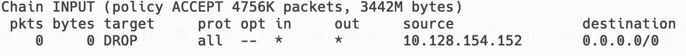
此时若尝试从 10.128.154.152 对本机执行 ping 操作，会发现 ping 不通，说明规则生效了。如果在 INPUT 链中的 filter 表里再新增一条规则，放通来自 10.128.154.152 的流量会怎么样？
使用如下命令新增一条规则，-A 表示追加模式，会在 filter 表的末尾新增一条规则；与 -I 不同的是，前者是在首部新增一条规则。
iptables -A INPUT -s 10.128.154.152 -j ACCEPT再次尝试 ping 操作，依然 ping 不通。那现在尝试在首部新增一条放通规则
iptables -I INPUT -s 10.128.154.152 -j ACCEPT规则内容如下
Chain INPUT (policy ACCEPT 4760K packets, 3443M bytes)
pkts bytes target prot opt in out source destination
0 0 ACCEPT all -- * * 10.128.154.152 0.0.0.0/0
2 168 DROP all -- * * 10.128.154.152 0.0.0.0/0
0 0 ACCEPT all -- * * 10.128.154.152 0.0.0.0/0再一次尝试 ping 操作，可以 ping 通了。
这说明，规则的顺序很重要！规则是按顺序依次匹配的，前面的命中了就不会再匹配后面的规则了。
那边规则的顺序是怎样的呢？还记得 --line-numbers 参数吗，使用该参数查看规则编号如下
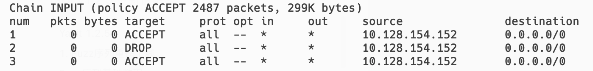
编号即它们的匹配顺序，你肯定会想能不能把规则插入在指定的编号后，毕竟这样会方便许多。可以在 -I 参数后增加一个数字，表示要插入至对应数字对应的编号中。
下面的命令会将规则放置在 num = 2 的位置
iptables -I INPUT 2 -s 10.128.154.152 -j ACCEPT结果如下
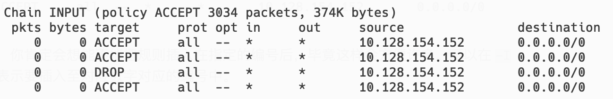
规则的删除
删除规则首先需要知道要删除的规则是什么，有两种方式，一种是指定规则的编号，另一种是指定规则的匹配条件与动作，以此来筛选要删除的目标。
首先来看第一种方法，使用 --line-numbers 『--line 简写』参数查看规则编号
iptables --line -nvL INPUT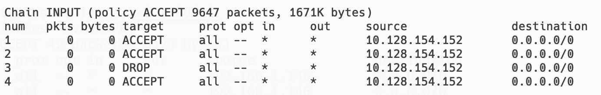
假定要删除编号为 2 的规则
iptables -t filter -D INPUT 2执行后再次查看当前规则，效果如下
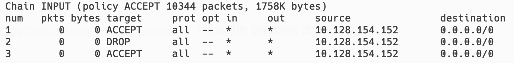
第二种方式则是指定规则的匹配条件，执行如下命令，删除源地址为 10.128.154.152，动作为 ACCEPT 的规则
iptables -t filter -D INPUT -s 10.128.154.152 -j ACCEPT但是查看删除后的规则内容会发现，它只删除了其中一条，这是因为 -D 选项一次只会删除一条规则，若想删除另一条需要再执行一次。
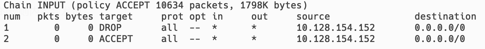
而删除某条链中指定表中的所有规则的命令如下，前面已经使用过了，
iptables -t 表名 -F 链名-F 选项为 flush 之意，即冲刷指定的链删除指定链中的所有规则，但是注意在没有保存 iptables 规则的情况下，请慎用。
-F 选项不仅仅能清空指定链上的规则，还能清空整个表中在所有链上的规则，不指定链名，只指定表名即可删除表中的所有规则，命令如下
iptables -t 表名类似的，若删除链上的所有规则，则使用
iptables -F 链名
规则的修改
规则的修改有一定的限制，通常来讲只能修改已有规则的动作，若想修改规则的匹配条件，最好的方式是删除已有规则再新增一条。
假设要修改规则的动作，可以使用如下命令，其中 -R 选项指定要修改的链，并指定规则对应的编号『有坑』
iptables -t filter -R INPUT 1 -s 10.128.154.152 -j ACCEPT修改后的内容如下
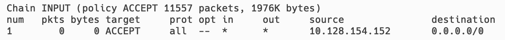
需要注意，-s 参数不能省略，或者说你需要指定规则的所有匹配逻辑，才能对规则进行修改。即使已经指定了规则对应的编号，但是在使用 -R 选项修改某个规则时，必须指定规则原本的匹配条件。
如果不指定会发生什么？执行如下命令
iptables -t filter -R INPUT 1 -j ACCEPT会发现 source 直接变成了 0.0.0.0/0，这是非常危险的。
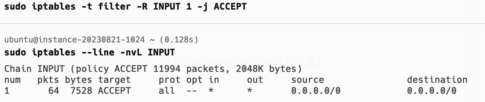
更糟糕的一种情况似乎，你如果执行了
iptables -t filter -R INPUT 1 -j REJECT就意味这拒绝了所有的入站数据包，如果此刻你在使用 ssh 连接主机则会立即断开，对于云主机而言，这是非常糟糕的事情。
所以务必不要这么做。
这里说明一下
DROP和REJECT的具体区别，DROP和REJECT造成的结果都有禁止访问和拒绝的意思，但相比之下，REJECT显得更加礼貌和干脆，如同你直接拒绝你的追求者，相比吊着人家不给予任何回应要好的多。REJECT会告知对方，本机拒绝了你的访问请求，而DROP则不会有任何回应。
修改指定链中指定表的默认策略方式如下
iptables -t filter -P FORWARD ACCEPT上面的命令修改 FORWAR 链的 filter 表的默认策略为 ACCEPT，表示允许转发，默认是不允许的。
规则的保存与恢复
默认情况下通过 iptables 进行的修改都是临时的，但机器重启后又会恢复到最初的状态。
那么规则如何持久化？最通用的方法是使用 iptables-save 命令。通过该命令配合重定向，将配置写入指定的文件中『文件的位置可以任意指定，但 ubuntu 通常将规则存放在 /etc/iptables 中』。
iptables-save > /etc/iptables/rules.v4若是想从保存的文件中恢复规则，则可以使用 iptables-restore 命令
iptables-restore < /etc/iptables/rules.v4规则匹配逻辑
iptables 支持的匹配逻辑远不止源地址这一项。在前面的内容中，只使用了 -s 选项指定了源地址，但该参数还可以指定 CIDR 形式的地址段，例如 0.0.0.0/0，这也是它的默认值。
源目 IP
如果想同时指定多个 IP，可用逗号分隔
iptables -I INPUT -s 10.128.154.152,10.128.154.153 -j ACCEPT此外还可以使用 ! 来对条件取非，例如
iptables -I INPUT -s !10.128.154.152 -j ACCEPT需要注意，使用取非操作时，不可同时指定多个条件，即不能指定多个
IP。
上面的命令表示，如果源 IP 不是 10.128.154.152 就放行。但是需要注意，这并不代表如果源 IP 是 10.128.154.152 就拒绝，这是两码事。因为当源 IP 为 10.128.154.152 时，与 !10.128.154.152 匹配的结果是 false，不会执行后面的动作。而是继续匹配下一条规则，若后续没有其它规则，INPUT 链的默认动作是 ACCEPT，那么流量就会被放行。
所以，若是要拒绝某个 IP（段）的流量，使用类似下面的写法
iptables -I INPUT -s 10.128.154.152 -j DROP/REJECT除了匹配源 IP，还可以通过选项 -d 匹配目的 IP
iptables -I INPUT -d 10.128.154.152 -j ACCEPT协议类型
可以使用 -p 选项，指定需要匹配的报文的协议类型。例如拒绝来自 10.128.154.152 的 TCP 协议的流量。
iptables -I INPUT -s 10.128.154.152 -p tcp -j DROP-p 选项支持的协议有 tcp, udp, udplite, icmp, icmpv6,esp, ah, sctp, mh『非全部，版本不同可能会有差异』，如果不显示指定 -p 参数，则表示匹配所有协议，效果和 -p all 相同。
网卡接口
若是有多个网卡，但只希望规则对指定网卡生效，可以使用 -i 参数指定流量来自哪个网卡
iptables -I INPUT -i eth0 -s 10.128.154.152 -p tcp -j DROP上面的规则指定只丢弃从网卡 eth0 流入的数据包。
既然能指定入口网卡，那么也能指定出口网卡，与 -i 对应的选项是 -o ，用于限定规则的作用范围只针对特定网卡的流出流量生效。
-i 选项添加的规则只能作用于 PREROUTING 链、INPUT 链、FORWARD 链。
-o 选项添加的规则只能作用于 FORWARD 链、OUTPUT 链、POSTROUTING 链。
拓展匹配逻辑
拓展匹配逻辑需要使用附加的内核模块，例如匹配 tcp 协议中的端口号，使用的是 tcp 扩展模块中的 dport 扩展匹配条件。若想使用拓展匹配条件，需要指定要使用的拓展模块，
iptables -I INPUT -m tcp -p tcp --dport 22 -j ACCEPT例如上面的规则会放行对 22 端口的访问，从而允许使用 ssh 功能。-m 选项用于指定要使用的拓展模块，但是在某些情况下你可以省略它。如果没有指定 -m 选项，则默认会从 -p 选项中指定的参数来查找要使用的模块，-p 选项的参数也是 tcp，所以可以省略掉 -m 选项。
iptables -I INPUT -p tcp --dport 22 -j ACCEPT而若是想匹配源端口，则使用 --sport 选项。
扩展匹配条件也是可以取非的，比如 ! –dport 22，表示目标端口不是 22 的报文将会被匹配到。而不管是 –sport 还是 –dsport，都能够指定一个端口范围，比如，–dport 22:25 表示目标端口为 22 到 25 之间的所有端口。
iptables -I INPUT -p tcp --dport 22:25 -j ACCEPT也可以使用简写方式，--dport :22 表示匹配 0 到 22 的所有端口，--dport 22: 表示匹配 22 到 65535 的所有端口。
端口和源目 IP 一样可以使用用逗号分隔，指定离散的端口号，但需要使用 -m multiport 参数并配合 --dports 选项，因为这个功能需要用到 multiport 扩展模块
iptables -I INPUT -m multiport -p tcp --dports 22,443 -j ACCEPT参考
- https://www.zsythink.net/archives/tag/iptables/ 『朱双印的
iptables详解系列文章』